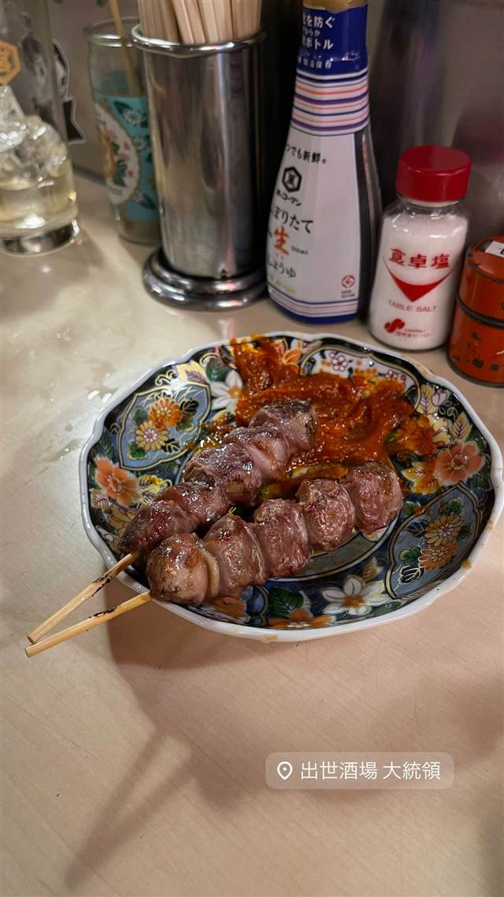

出世酒場 大統領
はしご禁止・現金のみ、独自7ルールの炭火焼き鳥
出世酒場 大統領
新橋にある老舗の焼き鳥居酒屋。炭火でじっくり焼く大ぶりの串焼きが人気で、「はしご禁止」「現金のみ」など独自の7つのルールがあることでも知られる。
TRIVIA
豆知識
- 「掛け持ち（はしご）禁止」など独自の7つのルールを掲げている
- 現金のみ・1人での来店不可という珍しい店則がある
REVIEWS
世間の評判
3.51食べログ
大ぶりな焼き鳥と独自ルール
- 白レバーなど大ぶりでジューシーな焼き鳥を高く評価する声が多い
- 1人3杯以上など独自の厳しいルールを飲兵衛向けと楽しむ人が多い
- 初めて訪れると独自ルールや店員対応が威圧的だと感じる人もいる
食べログ 口コミ416件
| 看板 | 大ぶりの串で提供する炭火焼き鳥・串焼き |
|---|---|
| こだわり | 素材の個性を活かすため大きめのサイズにこだわった串を、炭火でじっくり焼き上げる |
| どこから | 都心 |
| 営業時間 | 月〜土 14:00-22:30 日 休み |
| 予算 | 昼 ¥3,000～¥3,999 夜 ¥3,000～¥3,999 |
| 予約 | 予約不可 |
| 場所 | 新橋駅 東京都港区新橋3-18-3 |
| メモ | 老舗として知られる人気焼き鳥店。現金のみ、1人客不可、はしご禁止など独自の7つのルールがあることで有名。営業は火〜土、40席 |
食べたもの：串焼き
NEARBY
近い店・同じ系統の店
-
 ピザ 新橋駅
マルゴ 新橋
珍しいウォークイン型ワインセラーと生ハムピザ
夜 ¥4,000～¥4,999
ピザ 新橋駅
マルゴ 新橋
珍しいウォークイン型ワインセラーと生ハムピザ
夜 ¥4,000～¥4,999
-
 インド 内幸町駅・虎ノ門駅
ナンディニ 虎ノ門店 (NANDHINI)
食べログ百名店に選ばれた南インドミールスとドーサ
昼 ¥1,000～¥1,999 夜 ¥2,000～¥2,999
インド 内幸町駅・虎ノ門駅
ナンディニ 虎ノ門店 (NANDHINI)
食べログ百名店に選ばれた南インドミールスとドーサ
昼 ¥1,000～¥1,999 夜 ¥2,000～¥2,999
-
 つけ麺 新橋駅
麺屋 周郷
高圧釜で骨まで炊き上げた濃厚豚骨魚介つけ麺
昼 ¥1,000～¥1,999 夜 ¥1,000～¥1,999
つけ麺 新橋駅
麺屋 周郷
高圧釜で骨まで炊き上げた濃厚豚骨魚介つけ麺
昼 ¥1,000～¥1,999 夜 ¥1,000～¥1,999
-
 つけ麺 新橋駅
新橋 纏(まとい)
町火消の旗印にちなむ店名、平子煮干しの滋味深いそば
昼 ～¥999 夜 ～¥999
つけ麺 新橋駅
新橋 纏(まとい)
町火消の旗印にちなむ店名、平子煮干しの滋味深いそば
昼 ～¥999 夜 ～¥999
-
 家系 新橋
らーめん谷瀬家 新橋本店
三浦家から免許皆伝を受けた店主の家系ラーメン
昼 ～¥999 夜 ～¥999
家系 新橋
らーめん谷瀬家 新橋本店
三浦家から免許皆伝を受けた店主の家系ラーメン
昼 ～¥999 夜 ～¥999
-
 味噌 御成門
麺恋処 き楽
代々木の人気店いそじの姉妹店、もちもち麺の豚骨魚介つけ麺
昼 ¥1,000～¥1,999 夜 ¥1,000～¥1,999
味噌 御成門
麺恋処 き楽
代々木の人気店いそじの姉妹店、もちもち麺の豚骨魚介つけ麺
昼 ¥1,000～¥1,999 夜 ¥1,000～¥1,999